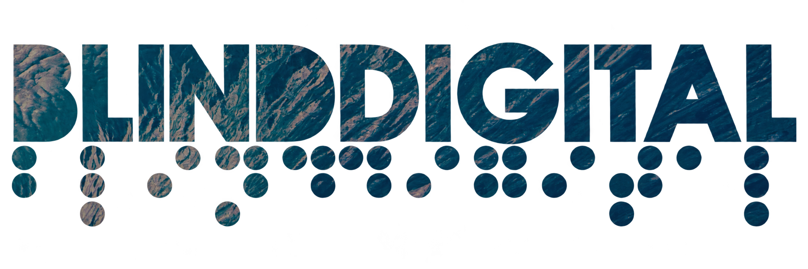
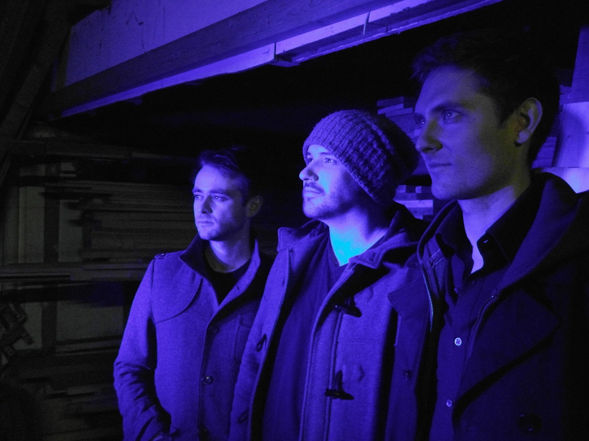
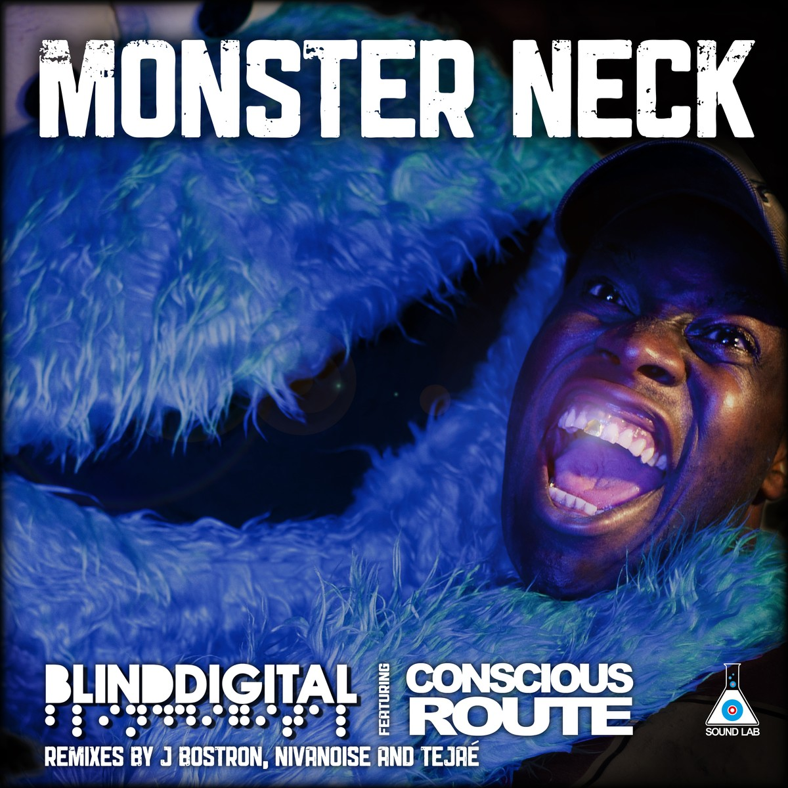

▶
▶VIDEO / 01Watch on YouTube ↗

House / Dubstep / Hip-hop
Mid-2000s to 2017

Selected releases from the Blind Digital catalogue.
Blind Digital began around the mid-to-late 2000s, originally set up by Dave Wallace (a childhood best friend) and Alex Jones (someone Dave met at work and bonded with over music). Early on, they focused on four-on-the-floor tech house tracks—influenced by artists like deadmau5—and built up a solid catalogue of tracks.
After I started learning electronic music production independently, I began collaborating with Dave and Alex and eventually joined the group. As we all gravitated towards dubstep, our tastes diverged in productive ways: I leaned towards the British underground side (artists like Magnetic Man and Afrojack), whilst Dave gravitated towards heavier sounds like Skrillex and Pendulum. Meeting Conscious Route brought vocal and lyrical energy into the fold, pushing us into heavy, big-beat hip-hop dubstep territory.
Dave Wallace and Alex Jones start Blind Digital making four-on-the-floor and tech house tracks; I learn electronic production, collaborate, and join the group as our sound shifts towards dubstep and hip-hop dubstep with Conscious Route.
Blind Digital contributed to the soundtrack for the video game Cloudberry Kingdom (a project I wasn't fully involved in at the time), whilst our dubstep and hip-hop collaboration era with Conscious Route produced standout favourites like Monster Neck (alongside a Monster Neck remix by Neva Noise) and live festival and party shows.
We released the Metaception EP featuring three tracks I worked on—spanning dubstep, hip-hop, and a dubstep-hip-hop crossover—with vocals by Rachel Coulter. We followed up with Murda (a personal favourite with Conscious Route) and Pennyman (a high-energy dub-reggae/dubstep track), alongside various remixes, collaborations with NevaNoise, and tracks driven largely by Dave with me in an ancillary role.
We played Audio Soup (with acts like Shogun and A Skills on the bill) and performed live shows with Conscious Route, including an underground hip-hop club night at Sketchy Beats Cafe.
Release artwork and variations on the original Blind Digital visual identity.

We just called it 'Monster Neck' in the project file for fun because the bass sound felt like it had a monster neck to it; Rollz ran with the name and turned it into the hook.
The track came out of endless days holed up in a small studio with Dave—drinking coffee, rolling joints, and obsessing over the tiniest production details while learning our craft together as young guys. Dubstep was still emerging at the time, and we ended up building a big, brash beat anchored by a bassline with so much weight to it that Monster Neck became the working file name.
Once Conscious Route (Rollz) came round to lay down vocals, he latched onto that working title and built the hook around it. From there, the concept spiralled: what is a Monster Neck? To us, it sounded like a massive, arrogant creature lurking at the bottom of the sea. The lyrics leaned straight into that underwater world, and the original notebook storyboards followed suit—complete with a deep-sea band (Carlos on the Korg, Frankie, and Mitch on drums) and surreal, lo-fi comic beats.
Bringing those pencil sketches to life was a proper DIY effort with John Fogarty and Susanna Fogarty. We had so much fun shooting the finger-puppet close-ups. During the shoot, Rollz was chased down by the Cookie Monster before being transformed into the Monster Neck himself—covered head-to-toe in taped-on bin bags.
Explore the original production plates. Select a plate to enlarge it, or open the original PDF.
From pencil sketches and a small studio to a music video made with friends.
Beyond the studio, playing live as Blind Digital—and taking these tracks out to proper grassroots parties—defined the time for me:
Audio Soup Festival. One of our favourite gigs of the run, playing a daytime tent slot before spending the night soaking up the festival up in the hills. The rain was relentless and hilarious, the atmosphere was pure magic, and the lineup delivered—catching A.Skillz on the main stage and Slamboree turning the place upside down with their full circus-and-DJ spectacle. Once the rain finally broke after dark, everyone gathered round our tent as stragglers drifted in and out until morning.
Featherstone Castle (The Borders). A proper underground, three-day free-party takeover in an abandoned castle in the Borders, stacked with massive rigs including Cenote Sound System. Rollz and I played on the third night to the die-hards still standing; a crew danced through our set before the rigs rolled straight into heavy drum and bass inside the castle walls, and Dave and I danced for hours on end.
Those studio days, muddy fields, and late-night sound systems were formative—and the start of friendships and creative collaborations that carried on years later, including making the album Lost Routes with Rollz during lockdown.
Friends, studios, cheap cameras. A collection of snapshots from the Blind Digital years.